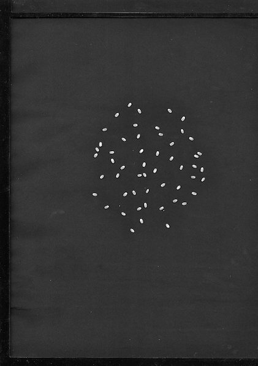
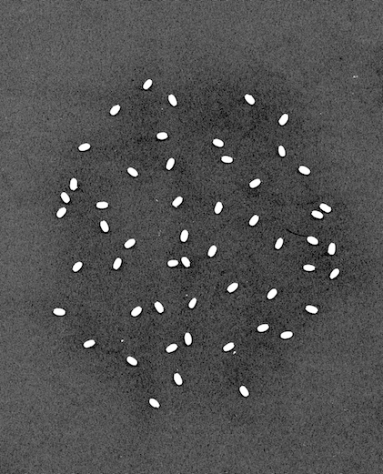
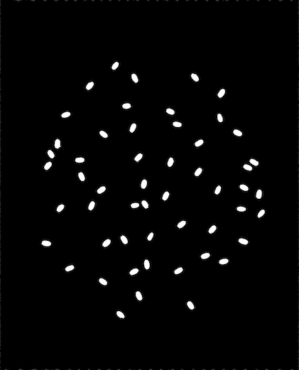
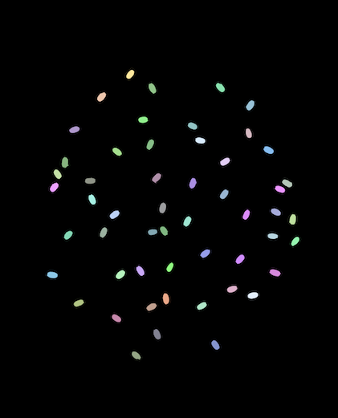

This section details a script used for analyzing seed scans. This script, ih-seed, comes included with the ih installation, and can be used to extract basic metrics from a seed scan image. In this example we will process the following image:
From this image we will get a seed count, as well as individual length, width, and area metrics for each seed.
If IH is installed you should be able to run this script simply by typing ih-seed at the command line. You can print out all options for the script by executing ih-seed -h. Your results should look something like this:
usage: ih-seed [-h] --input INPUT --output OUTPUT [--dpi DPI] [--roi ROI]
[--ystart YSTART] [--yend YEND] [--xstart XSTART] [--xend XEND]
[--writesteps]
Processes & Extracts a seed scan.
optional arguments:
-h, --help show this help message and exit
--input INPUT Path to input seed scan image.
--output OUTPUT Path to output csv file.
--dpi DPI dpi of the image.
--roi ROI roi file
--ystart YSTART Minimum Y of the roi.
--yend YEND Maximum Y of the roi.
--xstart XSTART Minimum X of the roi.
--xend XEND Maximum X of the roi.
--writesteps If specified, write processing steps.
The only arguments that really need to be talked about are the roi arguments. You can pass in an roi as a json file with the –roi argument, or by specifying individual bounds with the –ystart, –yend, –xstart, –xend arguments (for more information see the ROI section on the image processing page). The passed in roi only needs to be small enough to remove white edges around the outside of the image, but the smaller the cropped image is the faster the processing will run. Here’s the full example arguments used to process the above image:
ih-seed --input seed.jpg --output results.csv --ystart 2000 --yend "y - 3000" --xstart 2000 --xend "x - 1000" --writesteps
If you haven’t yet, go ahead and download the sample image (Download Image)
and run the above command on it. Once it finishes you should end with 5 additional files.
A results.csv file containing information about each seed, and 4 image files
corresponding to the processing steps. First the image should be cropped
based on the region specified, down to just the seeds:
Then, the seeds are thresholded using otsu’s method:
Finally, contours in the image are removed based on their size. This lets us keep the seeds since they are large and connected, while removing all the background noise:
The last image generated is an image for confirming that the contours are calculated correctly. A random color is assigned to each contour that way it is easy to identify that seeds are being treated individually, and are not grouped together.
{kind=link}